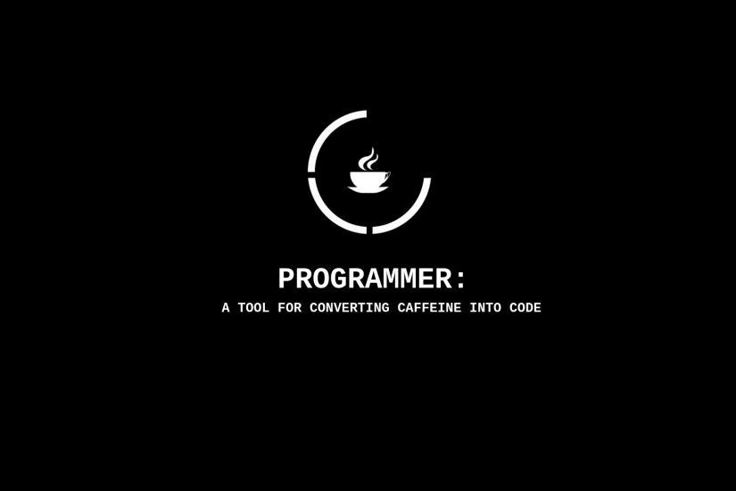
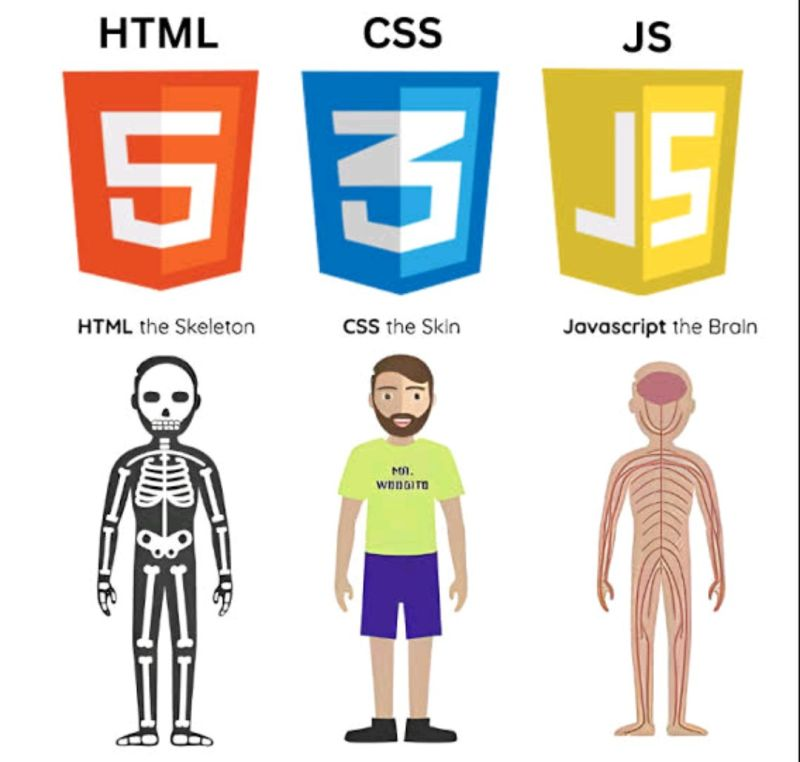
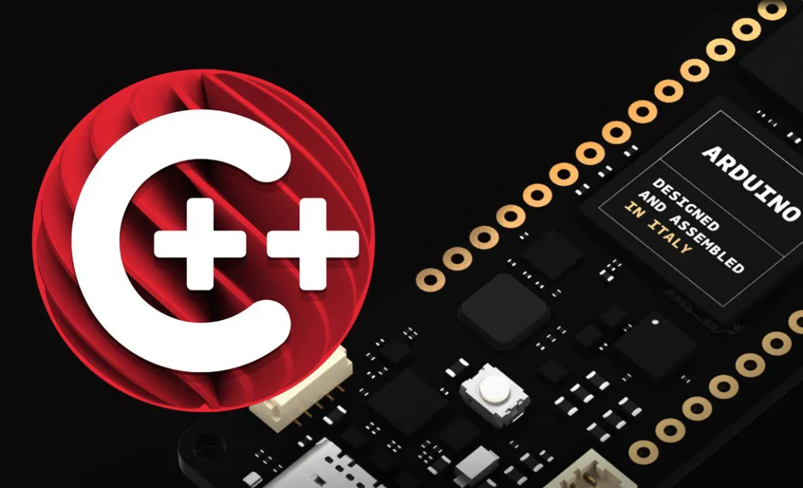
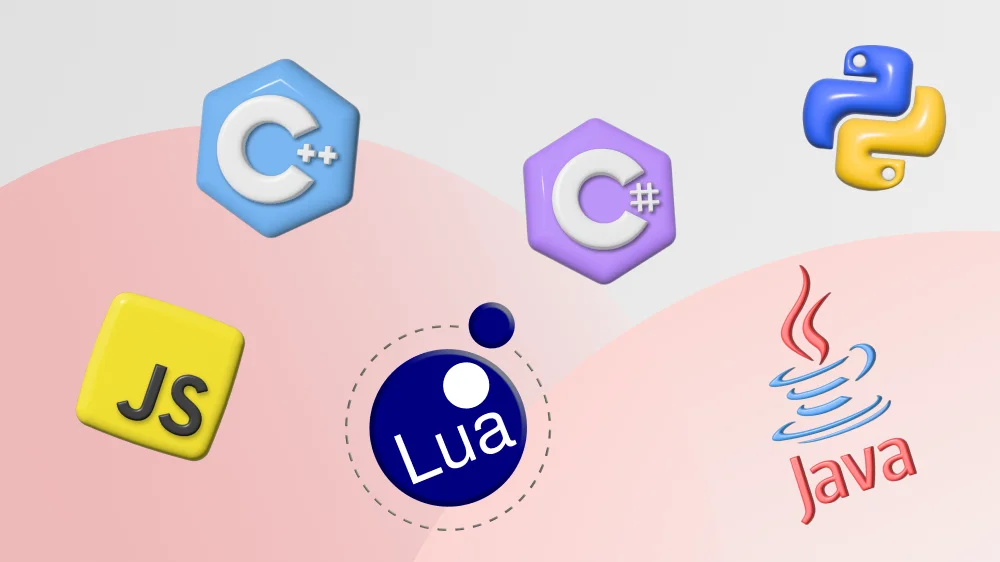
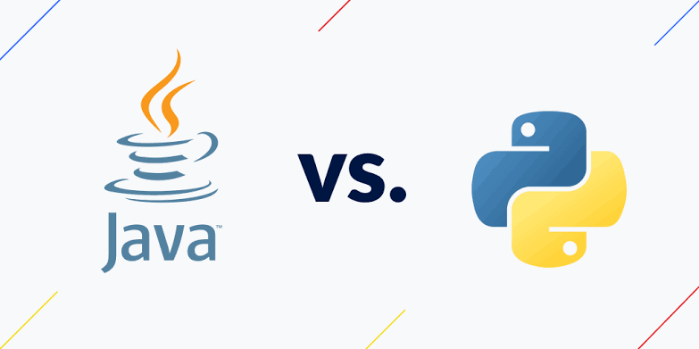
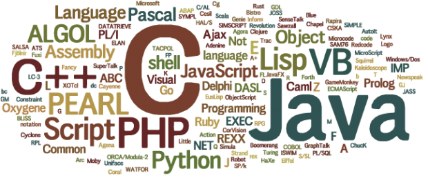
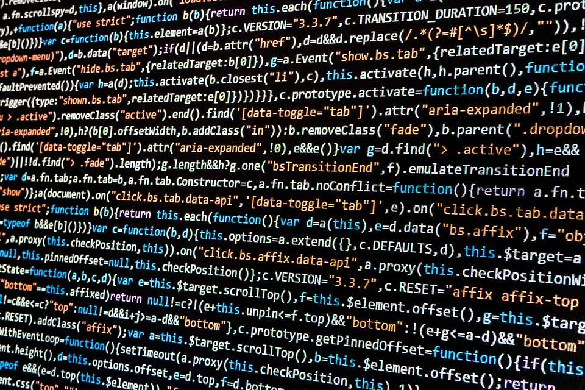
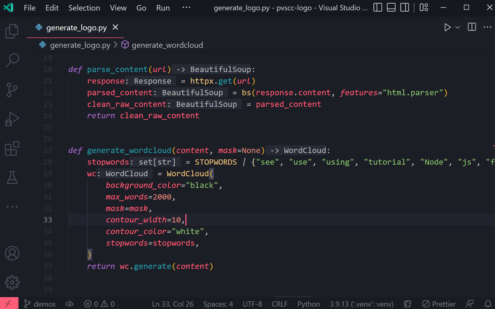

Python Basics
Introduction to Python together! But, Solo-Leveling is better, and Consistency is a key in here အယ့်လယ့်!
Welcome to Python Basics
What is Python and what are some Common Uses in the Industry?

Python is used in many fields like data science and machine learning, web development, scripting and automation, embedded system (a dedicated micro-computer inside a machine doing one specific job), IoT (Internet of Things: It refers to a network of physical devices, vehicles, appliances, and other physical objects connected to the internet that talk to each other), and much more.
Python is the main language that most data scientists and machine learning engineers currently use. Libraries like Pandas and Numpy make data analysis less tedious, while others like Tensorflow and Scikit make machine learning and working with AI models much more accessible.
Python is a general-purpose programming language known for its simplicity and ease of use. These made Python the most popular programming language in modern times.

Keep Reading!
In web development, Python frameworks like Django, FastAPI, and Flask let developers build scalable and secure back-end systems(We have 2 types of system, fronted: which is the design that you can see with your eyes, backend: which stored the data and do automation) with minimal effort. Many social media platforms like Instagram and Pinterest use Python on the back-end.
Cybersecurity professionals and ethical hackers use Python to detect vulnerabilities like malware( malware is harmful software built to steal from or damage your computer) and other viruses, build automated security scans, and analyze threats.
Python runs well on microcomputers like Raspberry Pi and MicroPython-compatible boards, so you can build all kinds of IoT projects like smart home devices, weather monitoring stations, and more.




Keep Reading! NICE!

In software testing, Python tools such as pytest are used to create reliable test suites, while system administrators rely on Python for server monitoring, log management, and system-level tasks.
Finally, one of Python’s biggest strengths is automation. You can write simple scripts to help you with repetitive tasks like extracting data from spreadsheets, sending emails, and working with files on your local machine
Python is widely used in DevOps for writing CI/CD scripts and managing infrastructure across development pipelines. It is also commonly used to build back-end services and internal APIs.

Almost there!
Libraries like Selenium and BeautifulSoup also make it easy to interact with websites, so you can scrape public data, automate tasks through a web UI, and even manage cloud developments for your projects.
As you can see, Python is a very powerful language, and yet, it’s easy to learn. From simple automation scripts to large-scale, industrial-level applications, you can use Python for just about anything.
Python is a great choice for anyone who wants to learn programming, regardless of what they choose to specialize in later.
Take a Quiz